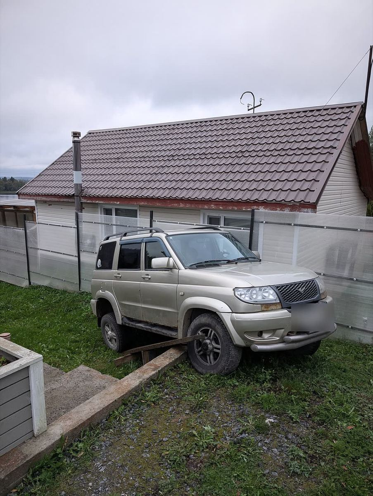

Эвакуатор в Адмиралтейском районе 24/7
В каждом районе Петербурга работают 2–3 наших экипажа. Точное время подачи диспетчер назовёт по адресу, стоимость до выезда.
- Работаем 24/7
- Подача в районе 25–35 мин
- Цена до выезда
Диспетчер ответит круглосуточно и назовёт стоимость до выезда.

- Где работаем
- Сенная площадь, Коломна, Садовая, Технологический институт, Измайловский проспект
- Основные дороги
- Садовая, Измайловский и Московский проспекты, набережные Фонтанки, Мойки и Обводного канала
Особенности района
- Исторический центр: узкие улицы, набережные и плотная парковка.
- Рядом Обводный канал и выезд на Московский проспект: удобно ехать на юг города.
- Ночью в навигацию учитываем разводку мостов, если нужно на Васильевский или Петроградскую.
Какая техника приедет
Частые вызовы в районе
Как мы работаем в районе
Адмиралтейский район — это центр города с набережными и узкими улицами. Ориентир подачи 25–35 минут. Если машина стоит на набережной или в переулке, опишите место, и диспетчер скажет, какая техника приедет.
Можно поехать вместе с машиной в кабине эвакуатора. Оплата после доставки, по сумме, которую диспетчер назвал до выезда.
Частые вопросы
Через сколько приедете в Адмиралтейском районе?
Ориентир подачи в Адмиралтейском районе 25–35 минут. В час пик может быть дольше, ночью чаще быстрее. Точное время диспетчер назовёт по адресу.
Заберёте машину с набережной?
Да. Уточним, где эвакуатор может встать, и погрузим без помех для движения.
Сколько стоит?
Стоимость зависит от адреса подачи, маршрута, типа автомобиля, его состояния и сложности погрузки. Диспетчер назовёт сумму до выезда. Если на месте всё как в описании, сумма не меняется.
Кто отвечает, если машину повредят?
Мы. Ответственность компании застрахована, за автомобиль отвечаем от погрузки до выгрузки.
Нужен эвакуатор сейчас?
Круглосуточно. Стоимость назовём до выезда.